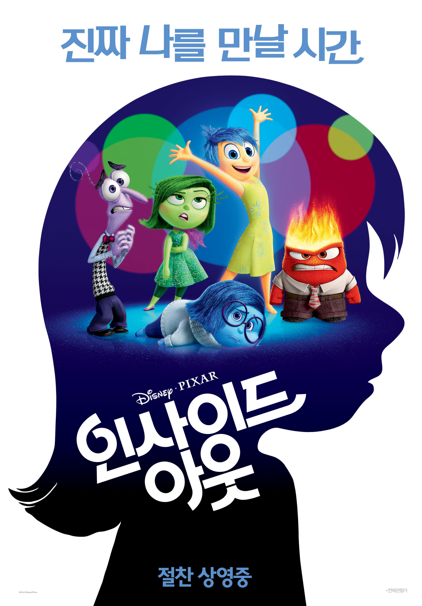
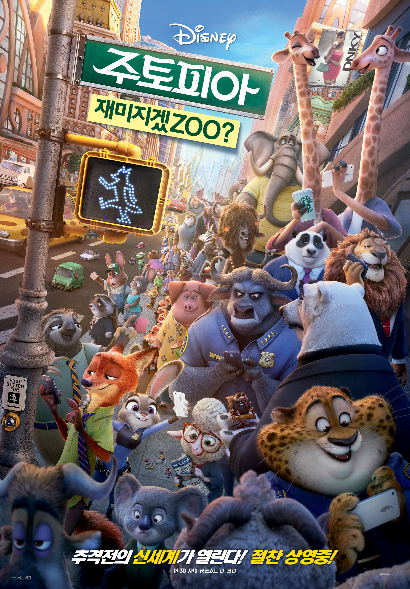
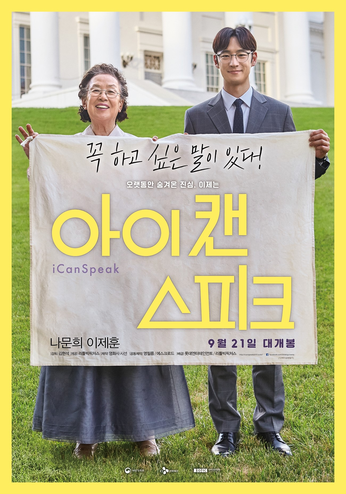

| 순위 |
제목 |
포스터 |
줄거리 |
바로가기 |
| 1 |
인사이드아웃 |
 |
모든 사람의 머릿속에 존재하는 감정 컨트롤 본부
그곳에서 불철주야 열심히 일하는 기쁨, 슬픔, 버럭, 까칠, 소심 다섯 감정들.
이사 후 새로운 환경에 적응해야 하는 ‘라일리’를 위해
그 어느 때 보다 바쁘게 감정의 신호를 보내지만
우연한 실수로 ‘기쁨’과 ‘슬픔’이 본부를 이탈하게 되자
'라일리’의 마음 속에 큰 변화가 찾아온다.
'라일리'가 예전의 모습을 되찾기 위해서는 ‘기쁨’과 ‘슬픔’이 본부로 돌아가야만 한다!
그러나 엄청난 기억들이 저장되어 있는 머릿속 세계에서 본부까지 가는 길은 험난하기만 한데…
과연, ‘라일리’는 다시 행복해질 수 있을까? |
클릭 |
| 2 |
주토피아 |
 |
교양 있고 세련된 라이프 스타일을 주도하는 도시 주토피아.
이 곳을 단숨에 혼란에 빠트린 연쇄 실종사건이 발생한다!
주토피아 최초의 토끼 경찰관 주디 홉스는 48시간 안에 사건 해결을 지시 받자
뻔뻔한 사기꾼 여우 닉 와일드에게 협동 수사를 제안하는데… |
클릭 |
| 3 |
아이 캔 스피크 |
 |
온 동네를 휘저으며 무려 8천 건에 달하는 민원을 넣어 도깨비 할매라고 불리는 ‘옥분’.
20여 년간 누구도 막을 수 없었던 그녀 앞에 원칙주의 9급 공무원 ‘민재’가 나타나면서 팽팽한 긴장감이 흐른다.
민원 접수만큼이나 열심히 공부하던 영어가 좀처럼 늘지 않아 의기소침한 ‘옥분’은
원어민 수준의 영어를 구사하는 ‘민재’를 본 후 선생님이 되어 달라며 시간과 장소를 불문하고 부탁하기에 이른다.
둘만의 특별한 거래를 통해 결코 어울리지 않을 것 같았던 두 사람의 영어 수업이 시작되고,
함께하는 시간이 계속 될수록 서로를 이해하고 소통하게 되면서 친구이자 가족이 되어 간다.
‘옥분’이 영어 공부에 매달리는 이유가 내내 궁금하던 ‘민재’는 어느 날,
그녀가 영어로 꼭 하고 싶은 말이 있다는 것을 알게 되는데… |
클릭 |
| 4 |
지금 만나러 갑니다 |
 |
자신을 기억하지 못해도 그녀가 곁에 있다는 사실만으로 행복에 젖은 ‘우진’과
자신이 기억하지 못하는 그와의 이야기가 궁금한 ‘수아’.
‘우진’이 들려주는 첫 만남, 첫 사랑, 첫 데이트, 첫 행복의 순간을 함께 나누며
‘수아’는 ‘우진’과 다시 사랑에 빠지는데… |
클릭 |
| 5 |
극한직업 |
 |
불철주야 달리고 구르지만 실적은 바닥, 급기야 해체 위기를 맞는 마약반!
더 이상 물러설 곳이 없는 팀의 맏형 고반장은 국제 범죄조직의 국내 마약 밀반입 정황을 포착하고
장형사, 마형사, 영호, 재훈까지 4명의 팀원들과 함께 잠복 수사에 나선다.
마약반은 24시간 감시를 위해 범죄조직의 아지트 앞 치킨집을 인수해 위장 창업을 하게 되고,
뜻밖의 절대미각을 지닌 마형사의 숨은 재능으로 치킨집은 일약 맛집으로 입소문이 나기 시작한다.
수사는 뒷전, 치킨장사로 눈코 뜰 새 없이 바빠진 마약반에게 어느 날 절호의 기회가 찾아오는데… |
클릭 |